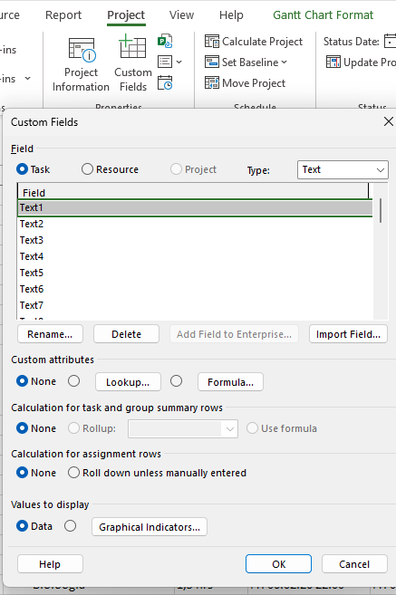
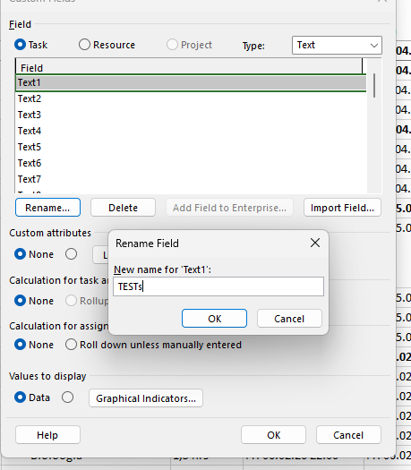
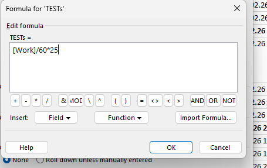
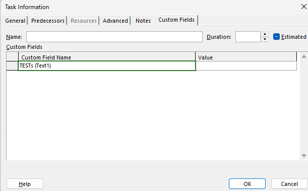

Kohandatud arvutusväli võimaldab Microsoft Projectis automaatselt arvutada ülesannete põhjal väärtusi — näiteks tunnitasusid, koormust või muid näitajaid.
Täpsema selgituse leiad videost: YouTube — Arvutusvälja lisamine MS Projectis
Samm 1 — Ava Custom Fields
Mine ülaribalt Project → klõpsa Custom Fields. Avaneb dialoog, kus on näha kõik kohandatud väljad. Vaikimisi on väljad nimetatud Text1, Text2, Text3… jne. Siin saad luua uusi arvutusväljasid ja neile nimesid anda.

Samm 2 — Nimeta väli ümber
Vali nimekirjast Text1 ja klõpsa Rename… Sisesta väljale mõistetav nimi — näiteks TESTq. Kinnita OK. Nüüd on väli loendis nähtav uue nimega TESTq (Text1).

Samm 3 — Loo valem (Formula)
Klõpsa nupul Formula…. Avaneb valemi redaktor. Kirjuta arvutus väljale — näiteks töötundide maksumuse arvutamiseks:
[Work]/60*25
See valem jagab tööminutid 60-ga (tunnid) ja korrutab tunnitasuga 25. Kinnita OK.

Samm 4 — Arvutusväli ülesande juures
Arvutusvälja nägemiseks ava mõni ülesanne: topeltklõps ülesandel → vahekaart Custom Fields. Seal on näha väli TESTq (Text1) koos arvutatud väärtusega. Sama veeru saab lisada ka tabelisse: paremklõps veeru päisel → Insert Column → vali TESTq.
